1. 감리 법·지침 특강 – 시험 로드맵 및 출제 개요
본 모듈은 정보시스템 감리사 1·2단원(정보화 관련 법/제도, 각종 지침·가이드)과 3단원(정보시스템 감리 설명·실무)의 핵심 토픽을 특강 형태로 정리한다. 감리 및 사업관리 과목(25문항) 중 법/지침/감리 영역은 12문항이 배정된다.
합격 단계 – 3단계 분류
- 6개월(집중): 정보화 법/제도, 지침, 가이드 (I·II 단원) 우선 학습
- 1~2년(평균): 전 과목 심화 학습
- 2년 이상(인내): 전체 과목 완성
시험 범위 (총 120문항 · 객관식 · 120분 · 85점 합격)
| 출제 분야 | 문항 수 |
|---|---|
| 법/지침/감리 + 사업관리 | 12 + 13 = 25문항 |
| 소프트웨어공학 / 데이터베이스론 / 시스템 구조 | 각 25문항 |
| 보안 | 20문항 |
2. 감리 / 법 도메인 로드맵 (전체 체계)
감리 법·지침 도메인은 상위 법령(전자정부법·시행령), 행정안전부 고시(정보시스템 감리기준 등), NIA(한국지능정보사회진흥원)의 가이드·해설서로 구성된다. 아래 체계도는 법령→고시→가이드로 이어지는 감리 근거 문서의 관계를 보여준다.
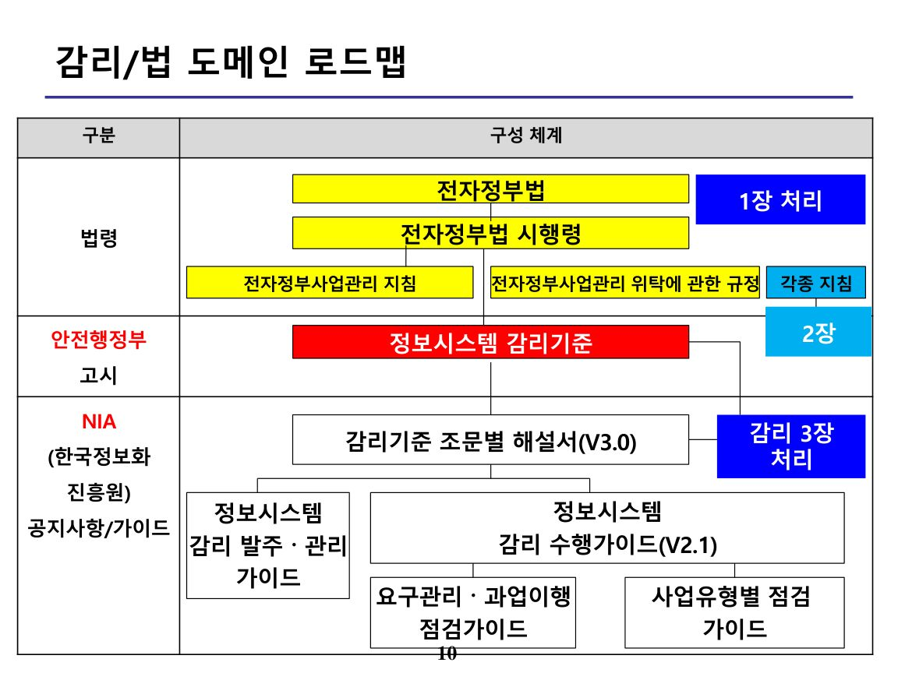
| 구분 | 주관 | 주요 문서 |
|---|---|---|
| 법령 | 행정안전부 | 전자정부법, 전자정부법 시행령, 전자정부사업관리 위탁에 관한 규정 |
| 고시 | 행정안전부 | 정보시스템 감리기준 |
| 가이드·해설서 | NIA | 정보시스템 감리기준 조문별 해설서(V3.0), 감리 발주·관리 가이드, 감리 수행가이드(V2.1), 요구관리·과업이행 점검가이드, 사업유형별 점검가이드 |
3. 공공데이터 관리지침
개요
| 구분 | 내용 |
|---|---|
| 제정 근거 | 「공공데이터의 제공 및 이용 활성화에 관한 법률」(공공데이터법) 제11조 |
| 공공데이터 | 데이터베이스·전자화된 파일 등 공공기관이 법령 등에서 정하는 목적을 위해 생성·취득하여 관리하는 광(光) 또는 전자적 방식으로 처리된 자료 |
| 제정 목적 | 공공데이터법에 따른 제공정책의 효율적 시행을 위해 각 기관·담당자가 준수할 관리 원칙과 기준 제시 |
| 주요 개정 | "기계 판독이 가능한 형태"의 의미 명확화 – 포맷 단계별 설명 추가, 활용하기 쉬운 오픈포맷 파일 생성·제공 권장(2016.9) |
기계 판독이 가능한 형태(Machine-readable)의 포맷 단계 ★★
"기계 판독이 가능한 형태"란 소프트웨어로 데이터의 개별 내용 또는 내부 구조를 확인·수정·변환·추출 등 가공할 수 있는 상태(법 제2조제3호)를 말한다. 최소 충족요건은 일반 상용 소프트웨어(아래아한글, MS Excel 등)로 자유롭게 가공 가능한 2단계 이상의 포맷이다.
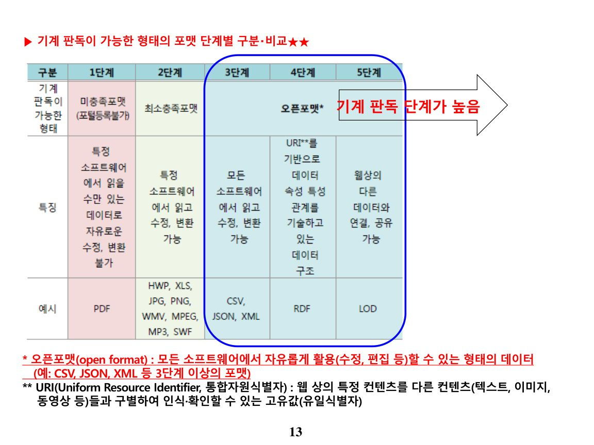
- 오픈포맷(open format): 모든 SW에서 자유롭게 수정·편집 가능한 형태. 예) CSV, JSON, XML 등 3단계 이상.
- 최소 충족 포맷(2단계): 상용 SW로 가공 가능하나 개방성은 낮음. 예) HWP, XLS. PDF·MPEG 등은 오픈포맷이 아님.
- URI: 웹 상 특정 콘텐츠를 유일하게 식별하는 고유값(최상위 단계 LOD의 기반).
4. 전자정부사업관리 위탁에 관한 규정 (PMO 제도)
개요 및 용어 정의
| 용어 | 정의 |
|---|---|
| 전자정부사업관리 | 시행령 제78조의2제1항에 따른 전자정부사업을 관리·감독하는 업무 |
| 전자정부사업관리자 | 자격요건을 갖추고 사업관리 업무를 위탁받아 수행하는 자 = PMO(을 업체) |
| 발주기관 | 위탁용역을 발주(하려는) 행정기관 등 (갑) |
| 위탁대상사업수행자 | 관리·감독 대상이 되는 전자정부사업(분리발주 SW 포함)을 수행하는 자 (프로젝트팀/병 업체) |
주체별 업무 – 발주기관 vs 전자정부사업관리자(PMO) ★★
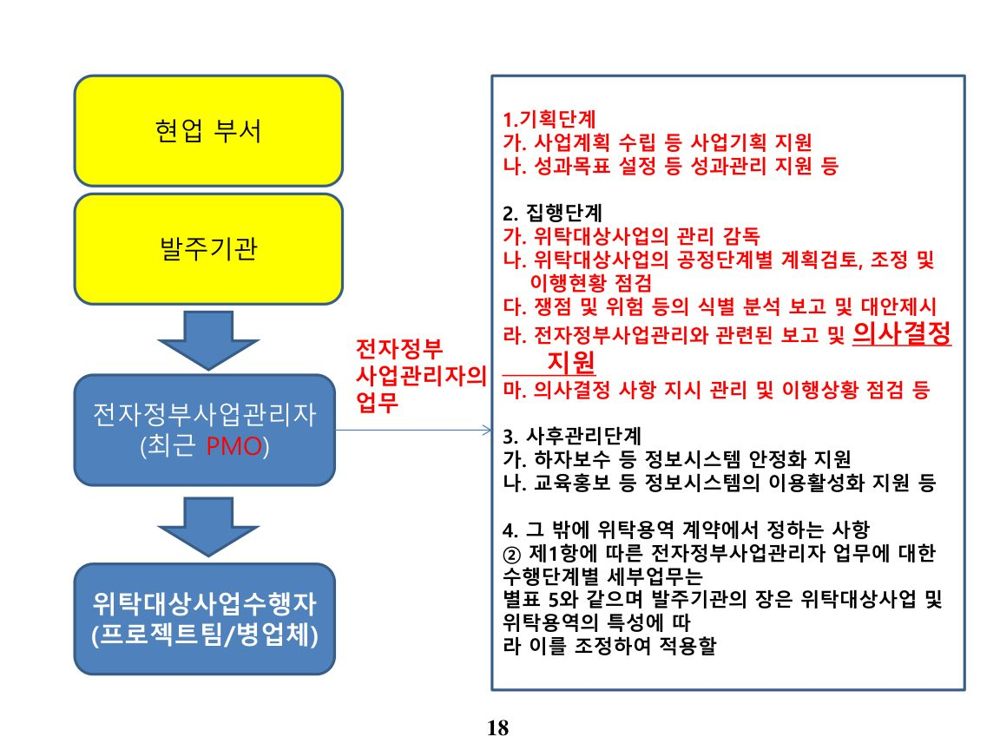
| 전자정부사업관리자(PMO) 업무 | 발주기관 업무 (제15조) |
|---|---|
|
1. 기획단계 – 사업계획 수립 등 기획 지원, 성과목표 설정 등 성과관리 지원 2. 집행단계 – 위탁대상사업의 관리·감독, 공정단계별 계획검토·조정·이행점검, 쟁점·위험 식별·분석·대안제시, 보고·의사결정 지원 3. 사후관리단계 – 하자보수 등 안정화 지원, 교육·홍보 등 이용활성화 지원 |
1. 위탁대상사업·위탁용역에 대한 관리·감독 2. 의사결정 및 보고체계 정립 3. 수행자–PMO 간 역할 조정 4. 현업부서 등의 의견수렴 및 이해관계 조정 5. 위탁업무에 필요한 행정사항 지원 |
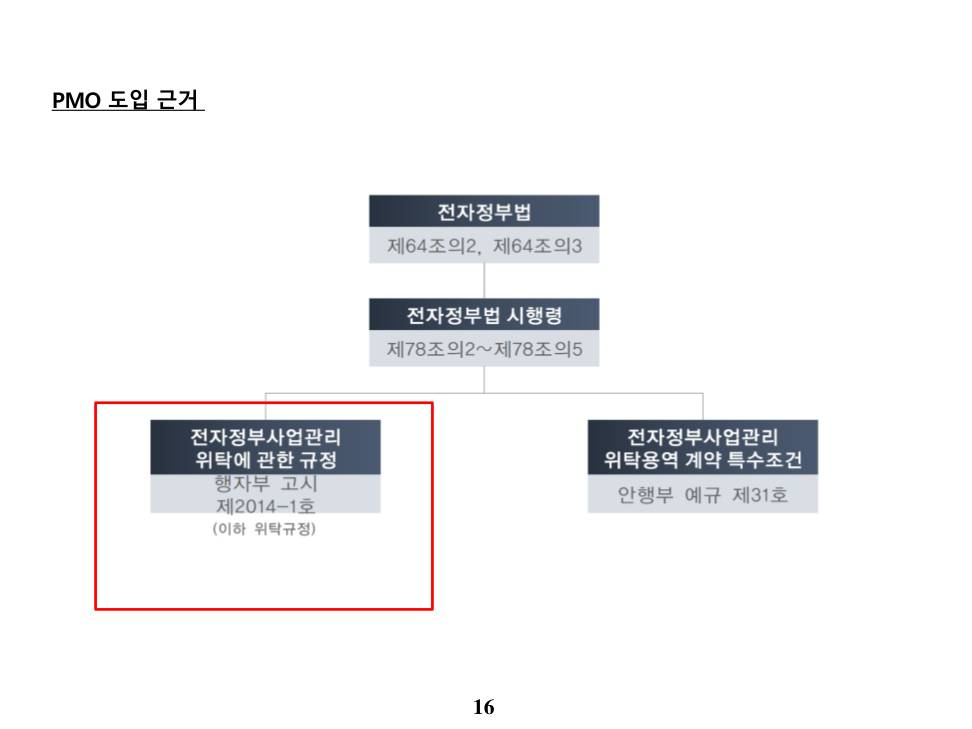
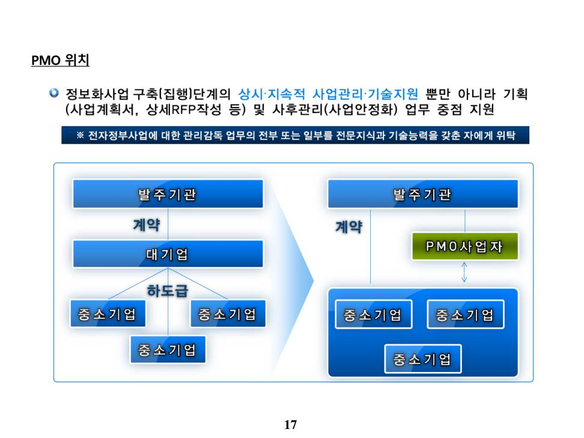
5. 정보화사업 예비타당성조사 제도
정의 및 필요성
| 측면 | 필요성 |
|---|---|
| 경제적 | 예산낭비 최소화 – 수요·경제성 없는 사업 추진 가능성 제거 |
| 기술적 | 사업 리스크 완화 – 사업비 증액·잦은 계획변경, 중도 취소 방지 |
| 정책적 | 사업 우선순위 – 후보사업군 비교·검토로 추진 여부 결정 |
대상사업 및 평가 항목 ★★★
대상: 총사업비 500억원 이상이면서 국가 재정지원 규모 300억원 이상인 건설사업·정보화사업(신규).
| 사업 유형 | 평가 항목 |
|---|---|
| 건설사업 | 경제성 분석 · 정책성 분석 · 지역균형발전 분석 |
| 정보화사업 | 경제성 분석 · 정책성 분석 · 기술성 분석 (또는 지역균형발전 분석) |
| 기타 재정사업 | 경제성 분석 · 정책성 분석 |
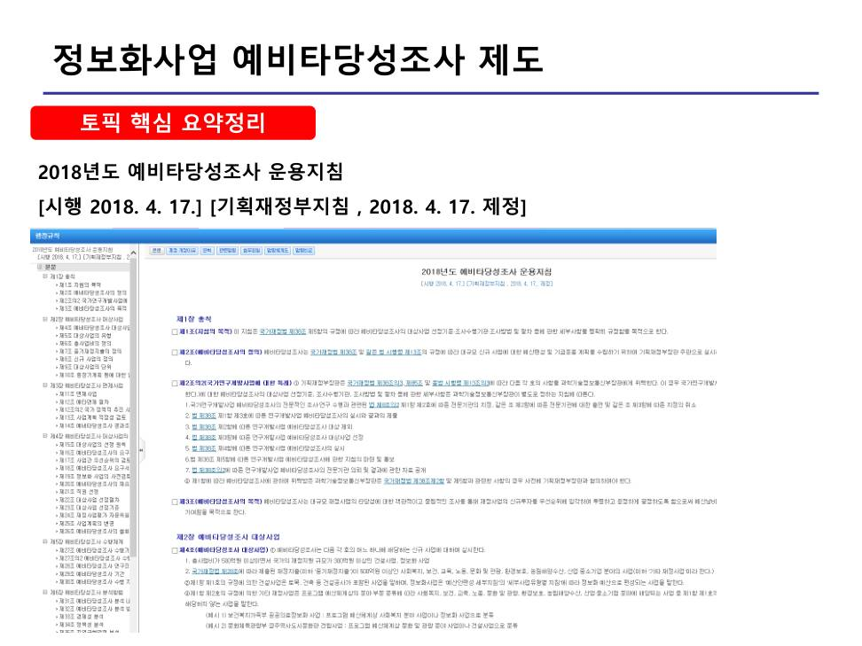
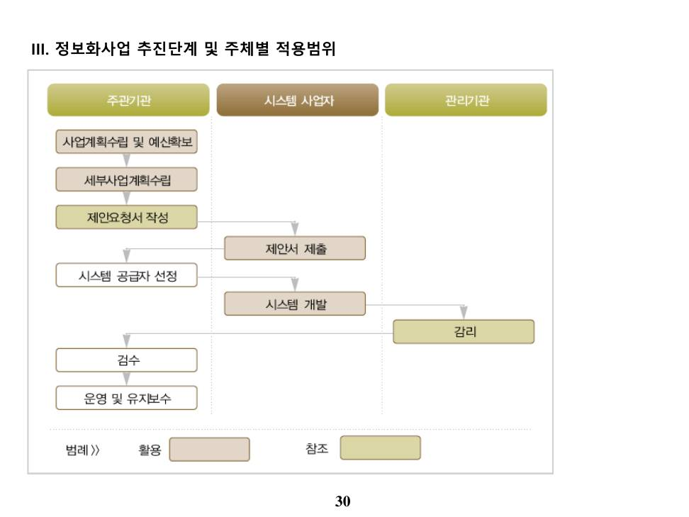
6. 정보시스템 하드웨어 규모산정 지침
목적 및 개념
정보시스템 HW 규모산정 방식과 산정항목별 기준·사례를 제시하여 적정 규모의 하드웨어 도입을 촉진하고 투자효율을 높이는 것이 목적이다. 규모산정이란 "기본적인 용량·성능 요구사항이 제시되었을 때 그것을 시스템 요구사항으로 변환하는 것"으로, CPU·메모리·디스크·스토리지가 산정 대상이다(PC·주변장비 제외, 서버 장비 대상).
규모산정 3가지 방법 ★★★
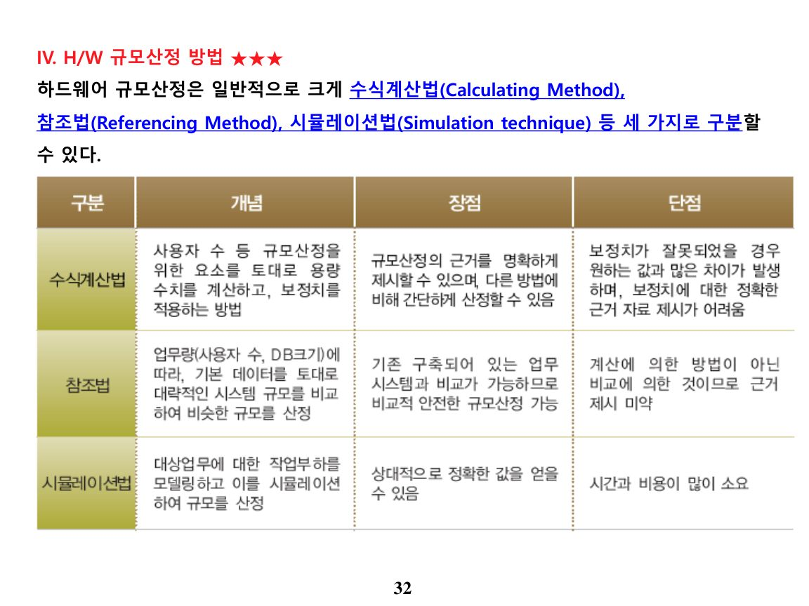
| 방법 | 내용 / 장·단점 |
|---|---|
| 수식계산법 (Calculating) | 산정 요소로 용량 수치를 계산하고 보정치 적용. 정확한 근거 제시 가능하나 보정치 오류 시 편차 큼. → 공공부문 채택 방식. |
| 참조법 (Referencing) | 업무량 기준으로 유사 규모를 비교·산출. 안전하고 신뢰성↑, 그러나 산정근거 명확화 어려움. |
| 시뮬레이션법 (Simulation) | 작업부하를 모델링·시뮬레이션. 가장 정확하나 시간·비용 과다. |
서버 작업부하별 성능기준 ★★
| 구분 | OLTP(+배치) 서버 | WEB / WAS 서버 | 스토리지 |
|---|---|---|---|
| 성능 측정치 | tpmC | max-jOPS | IOPS |
| 참조 성능기준 | TPC-C | SPECjbb2015 | SPC-1 |
- TPC-C → tpmC (분당 트랜잭션), TPC-E → tpsE (초당 트랜잭션). 둘을 바꿔치기한 보기가 단골 오답.
- 웹/WAS 참조기준은 SPECjbb2015(측정치 max-jOPS), 스토리지는 SPC-1(IOPS).
- HW 규모산정에는 프로젝트 원가산정 기법인 3점 산정(3-point)이 해당되지 않는다.
HW 용량산정의 개념 및 절차 ★★
HW 용량산정은 실제 업무와 응용을 기반으로 수학적 방법을 사용하여 도입 시스템의 용량을 계산하는 활동이다. 시스템 아키텍처·응용을 전제로 용량 요구사항과 성능을 결정하는 용량계획(Capacity Planning)과는 차이가 있으나 일반적으로 규모 산정과 동일한 의미로 쓰인다. CPU는 산정 방식이 다양하고 비용 비중이 커 규모산정의 핵심 쟁점이며, 메모리·디스크는 비용 비중이 작고 상대적으로 객관화가 쉽다.
성능평가 기준 – TPC와 SPEC ★★★
| 구분 | TPC (Transaction Processing Performance Council) | SPEC (Standard Performance Evaluation Corporation) |
|---|---|---|
| 설립·성격 | 1988년 설립, 세계 최고 공신력의 비영리 독립기관. HW·SW 트랜잭션 프로세싱과 DB 벤치마킹 정의. RDBMS의 OLTP 성능 평가지표 제공. | 1988년 HP·썬마이크로시스템 등 주요 업체가 컨소시엄으로 참여, 표준 벤치마킹을 개발·공개하는 미국 비영리 단체. |
| 주요 기준 | TPC-A 가장 단순 / TPC-B TPC-A 유사하나 네트워크 미포함 / TPC-C TPC-A의 단순·비현실성 개선, 5개 트랜잭션 규정, 분당 트랜잭션(tpmC) 측정 / TPC-E 트랜잭션 타입을 복잡화(tpsE) | SPECweb96 서버 포화·응답지연 시 HTTP Operation 측정 / SPECweb99 웹서버 개수 제한 없이 단순 웹환경(ASP·JSP) / SPECjbb2000 단일 서버 내 3-tier 시뮬레이션, WAS(자바 Class) 대상 |
HW 용량산정 대상 및 산정 공식
| 대상 | 산정 내용 / 공식 |
|---|---|
| CPU | 업무 처리용 CPU 규모 계산 후 적정 성능 서버 기종 산정. OLTP → tpmC, 웹서버·WAS → OPS(Operation Per Second) 개념 적용. |
| 메모리 | 메모리 = {시스템영역 + 시스템관리자영역 + (사용자당 필요 메모리 × 사용자수)} × 버퍼캐시 × 클러스터보정 × 여유율 |
| 디스크 | 시스템디스크 = {OS + 응용프로그램 + SWAP영역} × 여유율 데이터디스크 = {데이터영역 + 백업영역} × RAID영역 × 여유율 |
DB서버 용량산정 기초자료 ★★
| 항목 | 설명 | 기준(예) |
|---|---|---|
| 트랜잭션 수 | 연간 트랜잭션 현황, 1일 평균·Peak-Time 트랜잭션량, 예상 연간 증가량 | 사용자 1인당 100건/분, 증가율 30% |
| 온라인 업무량 | 검색·갱신·삽입·삭제별 레코드 크기·건수, 인덱스 합치 건수 | – |
| 배치 업무량 | 온라인 대비 배치 비중, 대량배치 데이터 건수·길이 | 온라인:배치 = 9:1 |
| 데이터베이스 | 초기·연차별 데이터 크기·증가율, 이미지/사운드/텍스트 비율, 인덱스·테이블 크기, 열 평균 바이트 | 연 증가율 30%, 1:1:8, 평균 300K, 450byte |
| 데이터 백업 | 백업서버 운영여부, 접속패턴, 백업 데이터량 | RAID-5, 50G |
| 운영시간·네트워크 | 운영시간, 네트워크 속도 | 7×24, 100Mbps |
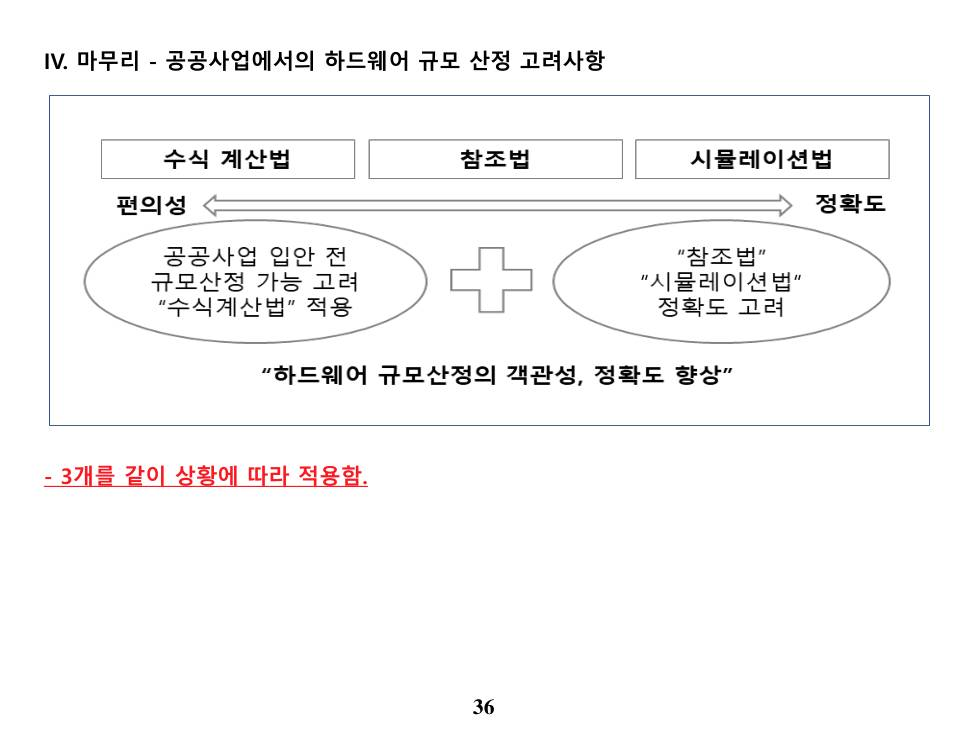
7. 조달청 협상에 의한 계약 제안서평가 세부기준
개요 및 배점
협상에 의한 계약방식으로 체결하는 물품·일반용역계약의 기술능력평가를 위한 세부사항을 정한다.
| 구분 | 내용 |
|---|---|
| 배점 한도 ★★ | 기술능력평가 80점 + 입찰가격평가 20점. 단, 관련 규정에 따라 10점 범위 내에서 분야별 배점한도 가감 가능. |
| 평가 등급 | 매우우수 100% · 우수 90% · 보통 80% · 미흡 70% · 매우미흡 60% |
| 대형 소프트웨어사업 | 사업금액 20억원 이상 SW사업(단, 유지관리사업은 100억원 이상) |
사업 유형 세분화 – 기존 3개 → 개정 7개 (2019.2 시행)
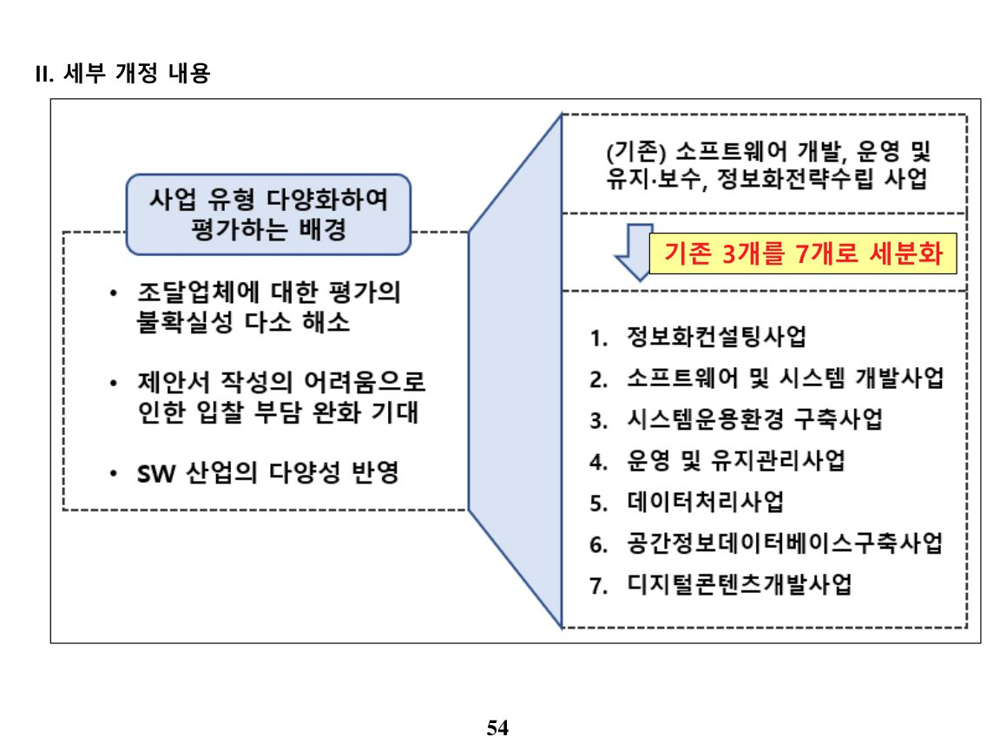
정보화컨설팅사업 / 소프트웨어·시스템 개발사업 / 시스템운용환경구축사업 / 운영·유지관리사업 / 데이터처리사업 / 공간정보DB구축사업 / 디지털콘텐츠개발사업의 7개 유형으로 세분화하여 유형별 별표 기준으로 평가한다.
별표 9 – 평가부문·평가항목·평가기준 (제9조제1항제1호 관련) ★★
SW개발·운영·유지보수·정보화전략수립 사업의 제안서는 아래 6개 평가부문으로 평가한다.
| 평가부문 | 주요 평가항목 | 평가기준 요지 |
|---|---|---|
| 전략 및 방법론 | 사업이해도 · 추진전략 · 적용기술 · 표준프레임워크 적용 · 개발방법론 | 환경분석·업무 연관관계 이해 기반의 일관된 방향·전략, 위험요소 고려한 창의적 대안, 확장성 있는 실현가능 기술, 표준프레임워크 사용계획, 단계별 활동·산출물 적정성. 단, 당해 사업 기획용역(ISP 등) 수행자가 참여 시 한 단계 하위 등급 부여. |
| 기술 및 기능 | 시스템·기능·보안·데이터·시스템운영 요구사항 · 제약사항 | 요구규격 충족 장비·인터페이스·확장성, 방법론·분석도구 통한 구체적 구현방안, 보안 설계단계 반영, 데이터 전환·검증·에러처리, 운영요구 충족, 제약사항·테스트 방안. |
| 성능 및 품질 | 성능·품질·인터페이스 요구사항 · 녹색성장 기여도 | 요구 성능 충족 구현·테스트 방안, 단계별 품질 점검·전문인력 투입, 시스템·사용자 인터페이스 최적방안, 에너지절감·E-Waste 최소화 등 저탄소녹색성장 기여. |
| 프로젝트 관리 | 관리방법론 · 일정계획 · 개발장비 | 위험·진도·보안·형상·문서 관리방법, 활동 도출·기간산정·중간목표·자원할당의 합리성, 개발환경 구성·해결방안. |
| 프로젝트 지원 | 품질보증 · 시험운영 · 교육훈련 · 유지보수 · 기밀보안 · 비상대책 | 품질보증 방안·인증사례, 시험운영 지원, 교육훈련 방법·일정, 하자·유지보수 계획, 기밀보호 체계, 백업/복구·장애대응 대책. |
| 상생협력 및 하도급계약 적정성 | 상생협력 · 하도급계약 적정성 | 공동수급체 구성 시 중소 SW사업자 참여비율(지분율)에 따라 평가. |
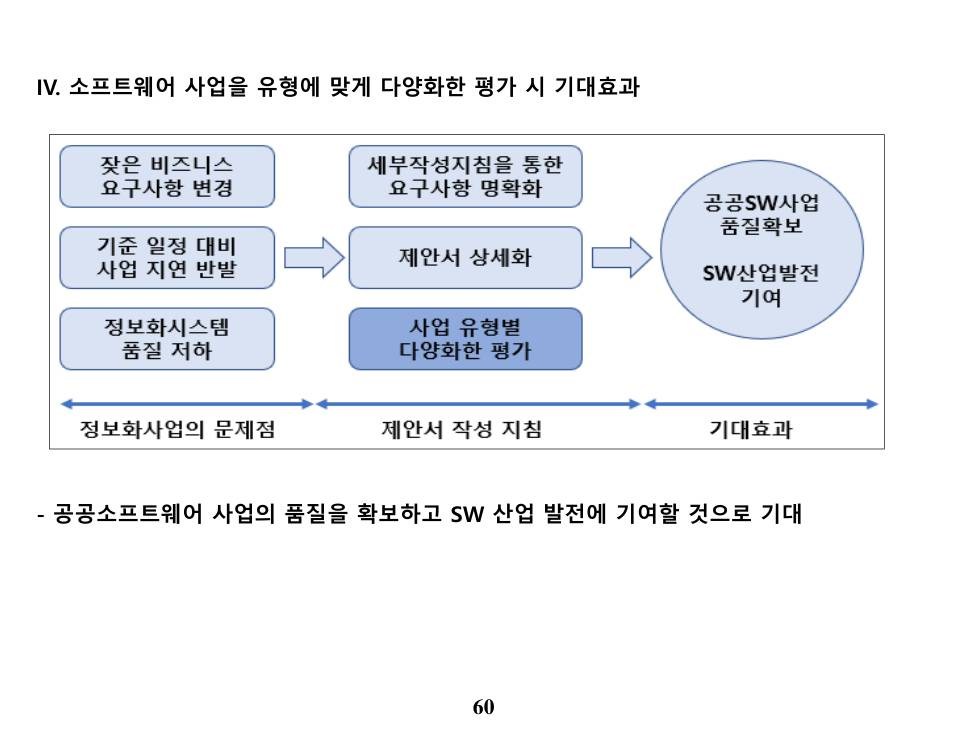
8. 정보시스템 운영 성과관리
개요
정의: 정보시스템의 운영타당성을 판단하는 기준에 따라 성과를 측정하고, 그 결과로 효율적 운영을 위한 유지관리유형을 결정하여 업무·비용 측면의 성과를 높이는 제반 활동.
성과측정 대상·절차
서비스 운영 개시 5년 경과 정보시스템이 대상(5년 미만도 필요 시 협의하여 측정 가능). 성과측정은 비용 측면과 업무 측면으로 구분 시행한다. ★★
측정지표 정의 및 산식 ★★
| 측면 | 측정항목 | 측정지표 | 지표 정의 / 산식 |
|---|---|---|---|
| 비용 측면 (암기: 비운유비) | 운영의 적정성 | 누적 유지보수비 비율 | 개발 총금액 대비 연간 유지보수비 누계 비율. (∑정보시스템 유지보수비 / 정보시스템 개발비) × 100 |
| 유지의 용이성 | 투입 운영유지비용 증감률 | 운영·유지보수 요구 비용의 증감률. {(최근3년 평균 운영유지비 − 초기3년 평균 운영유지비) / 초기3년 평균 운영유지비} × 100 | |
| 비용의 효율성 | 평균 운영유지비용 증감률 | 활용규모당 평균 운영유지비의 증감률. {(최근3년 평균 활용규모당 운영유지비 − 초기3년 평균 활용규모당 운영유지비) / 초기3년 평균 활용규모당 운영유지비} × 100 | |
| 업무 측면 (암기: 업사) | 업무수행 영향도 | 기능 활용도 | 구현된 기능의 실제 활용 수준. (구현된 전체 기능수 − (미활용 기능수 + 저활용 기능수 × 20%)) / 구현된 전체 기능수 × 100 |
| 사용상의 편의성 | 사용 편의성 | 사용자가 느끼는 편의성 수준. (∑사용 편의성 측정점수 / ∑사용 편의성 항목 측정점수 만점) × 100 | |
| 업무성과 달성도 | 목표대비 성과 달성도(Option1) 업무성과 증감률(Option2) | 직전년도 목표 대비 달성 수준(①), 최근3년 평균 업무성과 증감률(②). ① (직전년도 업무성과 / 직전년도 업무성과목표) × 100 ② [{(업무성과(A-n) − 업무성과(A-n-1)) / 업무성과(A-n-1)} / 3] × 100 |
유지관리 유형표 – 4분류 ★★★
| 유형 구분 | 정 의 |
|---|---|
| 유지 | 정보시스템의 운영유지비 투입 수준이 적정하고, 업무지원 수준도 양호하여 현행대로 유지할 필요가 있는 정보시스템 |
| 재개발 | 장기적 관점에서 운영유지비 절감이나 활용도 개선을 위하여 신기술 및 신규 소프트웨어 도입을 통한 비용측면 개선 노력이 필요한 정보시스템 |
| 기능고도화 | 정보시스템 활용 수준과 사용 편의성이 낮아 기능 개선을 통한 업무지원 강화가 필요한 정보시스템 |
| 폐기검토 | 비용 효율성과 업무지원 수준이 낮아서 폐기 여부에 대한 심층 검토가 필요한 정보시스템 |
유지관리유형 결정 기준 (기준값 = 3점)
| 측정 결과 | 유지관리유형 |
|---|---|
| 비용·업무 모두 기준값 이상 | 유지 |
| 업무 측면이 기준값 미만 | 기능고도화 |
| 비용 측면이 기준값 미만 | 재개발 |
| 비용·업무 모두 미만 | 폐기검토 |
폐기검토 유형 재분류표 ★
폐기검토로 분류된 정보시스템은 업무 파급 영향도 평가 등을 거쳐 아래 3가지로 재분류한다.
| 구분 | 내용 |
|---|---|
| 통폐합 | 기관 내부 혹은 외부에 유사한 역할을 수행하는 정보시스템이 존재하여 관련 기능을 충분히 대체할 수 있어, 현행 시스템을 폐기하고 유사 정보시스템에 기능을 통합 |
| 재개발 | 1차 성과측정에서 폐기검토로 식별되었으나 법적으로 또는 업무파급 영향도가 높아 폐기가 어려운 시스템에 대해, 신기술 정보자원 도입·재배치·SW 재개발 등을 통해 신규 구축에 준하는 수준으로 개선 |
| 폐기 | 1차 성과측정 결과 폐기검토로 식별된 정보시스템을 1차 결과대로 폐기 |
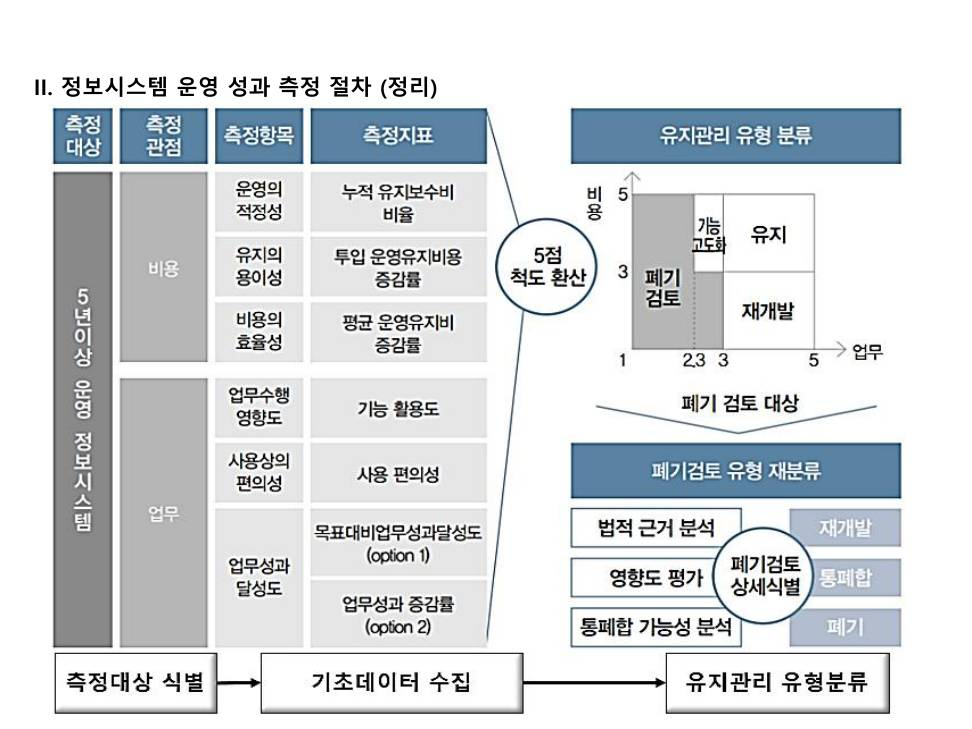
9. 소프트웨어산업 진흥법
SW산업진흥법은 공공SW 사업의 기획·설계 강화, 과업변경·분쟁조정, 공정한 계약체결·이행을 위한 방향으로 개정되었다. 이 법을 근거로 두 가지 대표 제도가 파생된다.
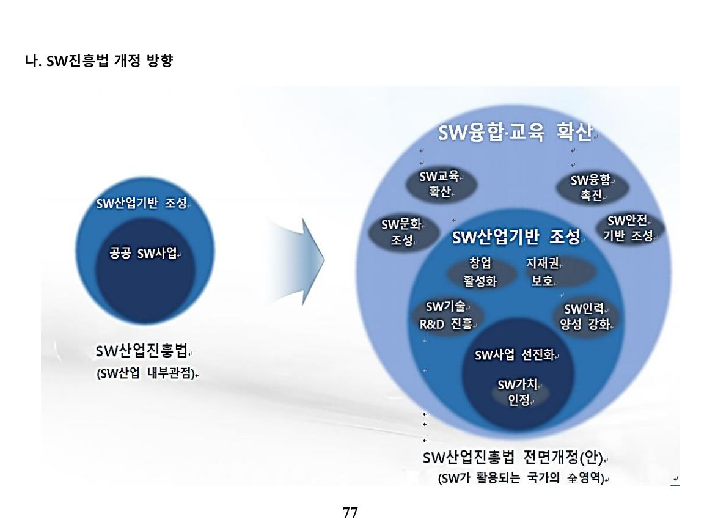
제14조의2(소프트웨어사업 영향평가): 국가기관 등이 SW사업 추진 시 민간 시장에 미치는 영향을 사전 분석·평가. → 공공SW 영향평가제
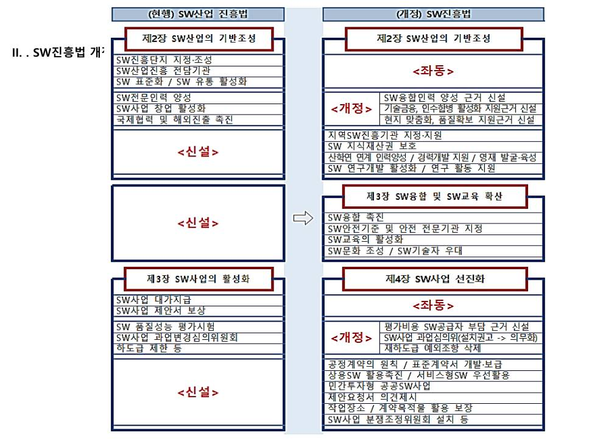
10. 공공소프트웨어사업 영향평가제
국가 정보화 시행계획에 반영하여, 공공 정보화 사업의 기획 단계부터 민간 시장에 미치는 부정적 영향을 평가하는 제도.
평가 유형 및 세부항목 ★★
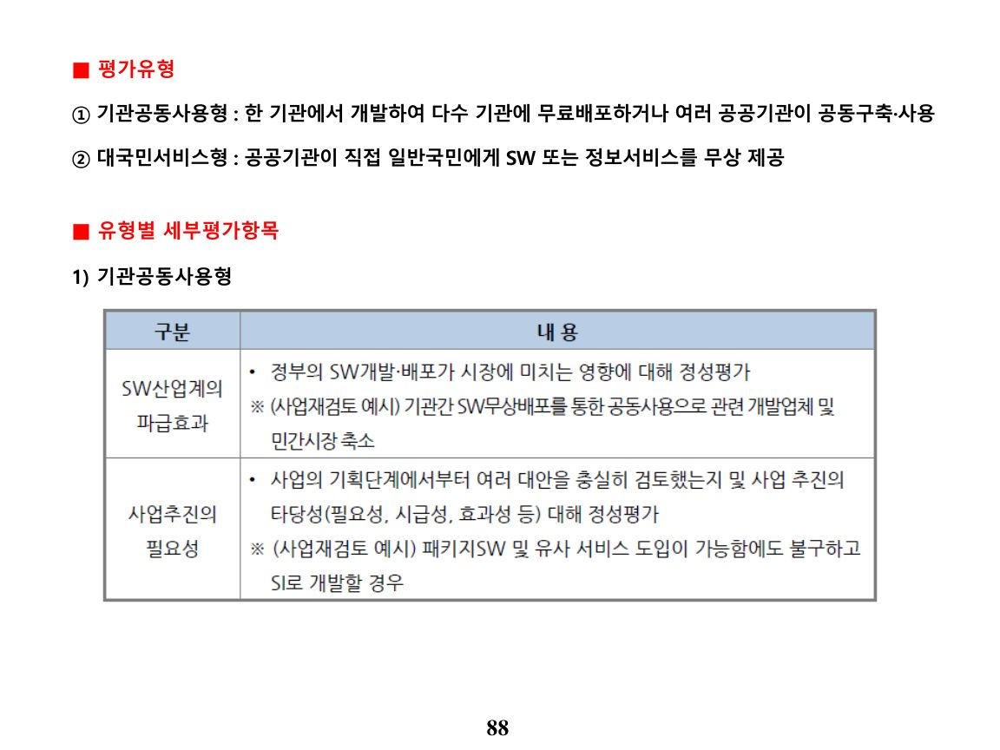
| 평가 유형 (2가지) | 정의 |
|---|---|
| 기관공동사용형 | 한 기관에서 개발하여 다수 기관에 무료배포하거나 여러 공공기관이 공동구축·사용 |
| 대국민서비스형 | 공공기관이 일반 국민에게 SW 또는 정보서비스를 무상 제공 |
| 구분 | 내용 |
|---|---|
| 평가 등급 | 사업재검토(민간 시장 침해 우려 제거) / 실행유의 |
| 민간 유사서비스 침해 | 매우 침해 · 침해함 · 침해 없음 (높음/낮음 2단계 아님) |
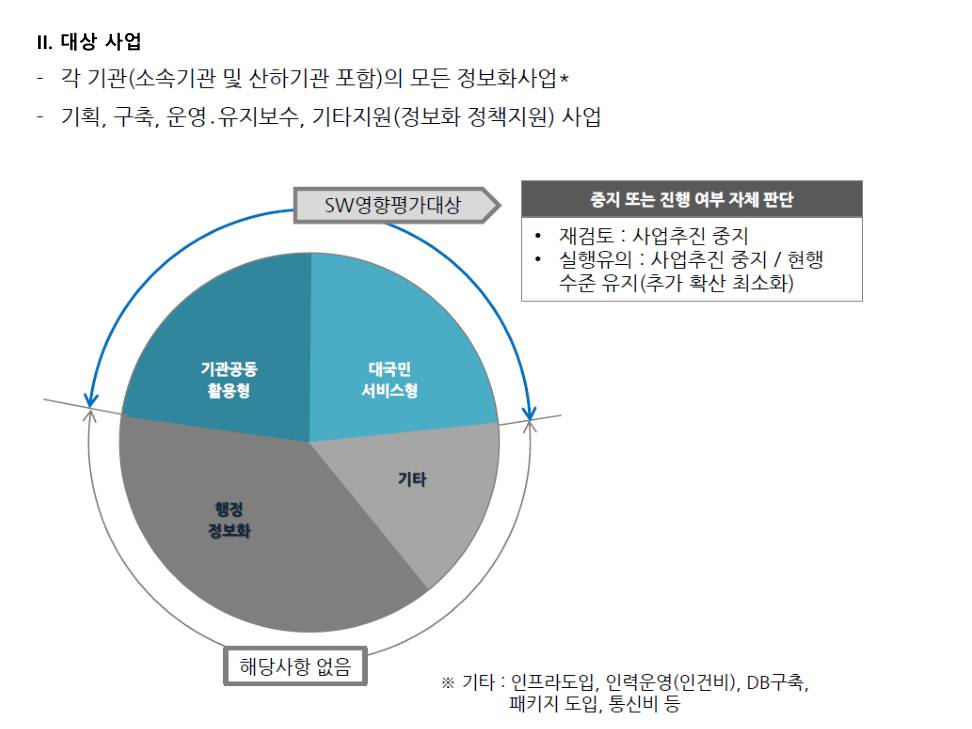
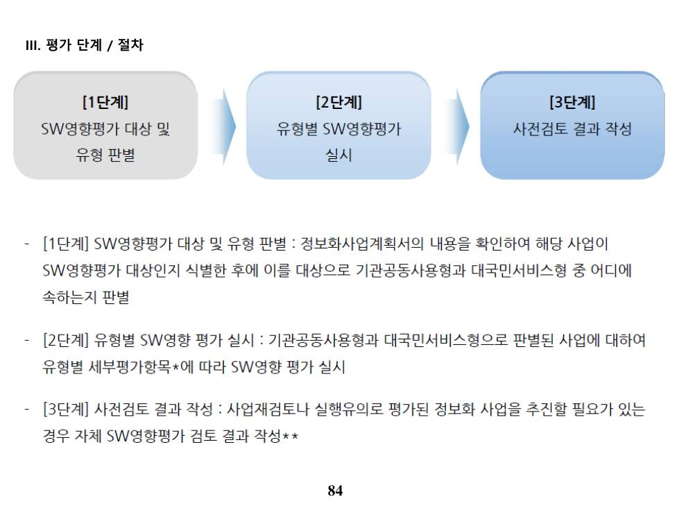
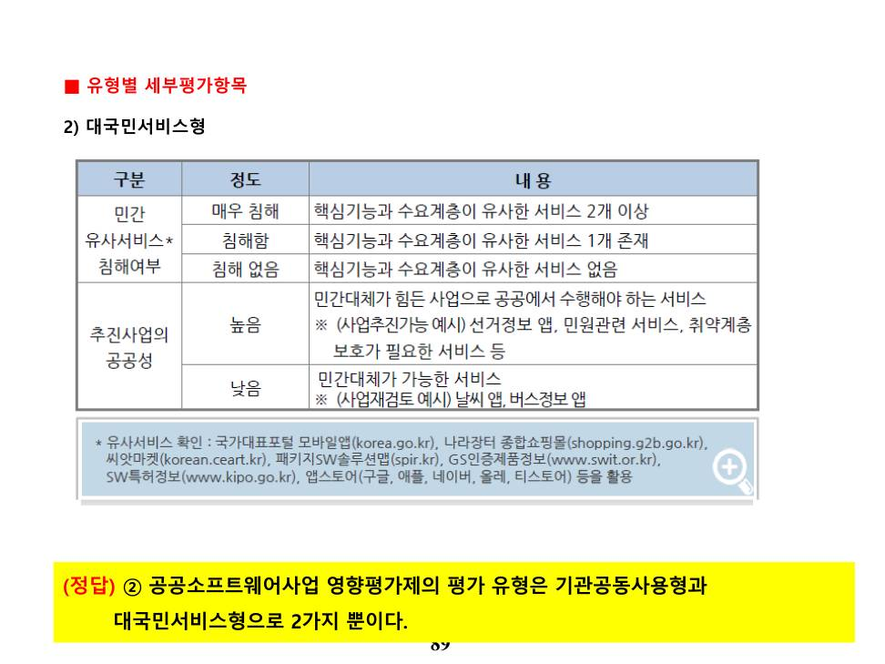
11. 소프트웨어 품질성능 평가시험 (BMT)
개요 및 대상
| 구분 | 내용 |
|---|---|
| 근거·목적 | SW산업진흥법 제13조의2에 따라, 국가기관 등이 분리발주 대상 SW 제품 구매 시 평가시험의 대상·절차·기준을 정함 |
| 평가시험 대상 ★★ | 분리발주 대상 SW 제품 중 구매금액 5천만원(VAT 포함) 이상 사업. 단, 종합쇼핑몰(나라장터) 등록 제품은 제외 |
| 시험기관 | 과기정통부장관 지정 – 한국정보통신기술협회(TTA) |
| 시험비용 | 원칙적으로 국가기관 등이 부담(공급자와 협의하여 분담 가능). 비용은 인건비·직접비·제경비·기술료로 구성 |
BMT 수행 절차
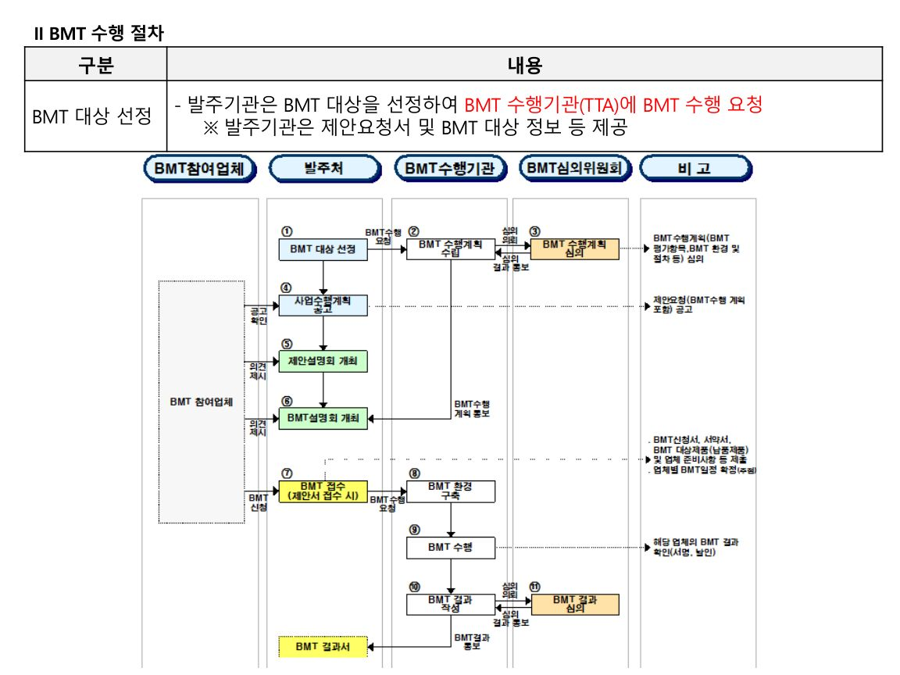
평가시험 실시의 결정·수행 (제4·8·9·14조) ★★
| 구분 | 내용 |
|---|---|
| 실시의 결정 (제4조) | 평가시험 대상 SW 구매 시 평가시험을 실시하거나 기존 동일제품의 종전 시험결과를 활용하여 구매에 반영. 단, 소규모 사업으로 시험비용 대비 효과가 낮다고 인정되면 지정시험기관의 장과 협의하여 미실시 가능. 실시·활용 여부는 입찰공고문·제안요청서에 명시. |
| 시험비용 (제8조) | 원칙적으로 국가기관 등이 부담하되, 필요 시 SW 공급자와 협의하여 분담비율을 정할 수 있음(지정시험기관에 통지). 과기정통부장관은 비용 일부를 지원 가능. |
| 평가시험 수행 (제9조) | 국가기관 등이 지정시험기관에 의뢰하면 지정시험기관의 장이 평가시험을 수행. 참여 SW 공급자·발주기관은 필요사항을 지원·제공. |
| 지정시험기관 역할 (제14조) | ① 평가시험 수행 ② SW 분야별 품질성능 평가모델 개발 ③ 기타 세부사항. 과기정통부장관은 신청·수행 현황·결과 등 자료 요청 가능. (지정기관 = TTA) |
- PoC(개념검증): 특정 기술·개념의 실현 가능성 검증(도입 전 타당성).
- Pilot test: 실제 환경 축소판에서 시범 운영·검증.
- BMT(벤치마크 테스트): 복수 제품을 동일 기준으로 비교·평가하여 선정. 공공 발주 시 5천만원 이상 분리발주 SW에 의무화.
12. 용역계약일반조건 – 지체상금 산정
지체일수에 산입하지 않는 사유 ★★★
- 불가항력(제24조)의 사유에 의한 경우
- 발주기관 책임으로 용역착수 지연·수행 중단
- 계약상대자 부도 등으로 연대보증인이 보증이행할 경우
- 계약상대자 부도 등으로 보증기관이 보증이행업체를 지정하여 보증이행할 경우
- 기타 계약상대자의 책임에 속하지 않는 사유로 지체된 경우
지체일수 산정 Case
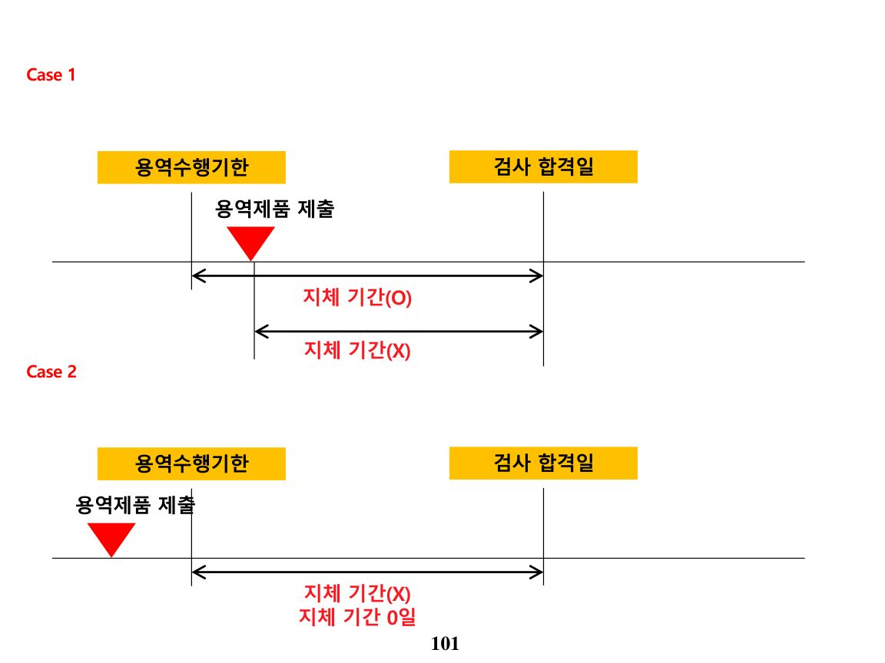
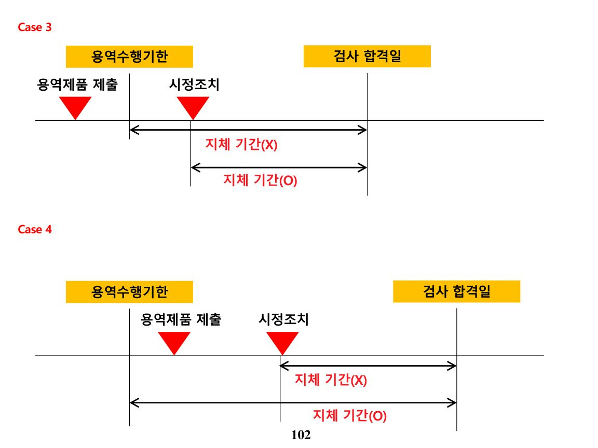
| 구분 | 상황 | 지체기간 판정 |
|---|---|---|
| Case 3 | 기한 내 제출 → 검사 합격 → (기한 후) 시정조치 → 합격 | 제출~검사 합격 구간은 지체 아님(X), 시정조치 구간은 지체기간(O) |
| Case 4 | 기한 내 제출 → 검사 → 시정조치 → 최종 합격 | 검사 구간은 지체 아님(X), 시정조치~최종합격 구간은 지체기간(O) |
- 기한 내 제출 후 검수 소요기간은 지체일수에 불산입(단, 기한 이후 시정조치 시 시정~최종합격까지 산입).
- 기한 경과 제출 시 익일부터 검수(또는 최종검수) 합격일까지 산입.
- 기한 말일이 공휴일이면 그 익일의 다음날부터 기산.
13. 정보시스템 감리 수행 가이드 – SW 요구사항 품질특성
요구정의단계 산출물 검토
요구정의단계 감리에서 감리원은 요구항목별 대비표를 기준으로 감리계획서에 명시된 감리영역별 점검항목을 점검한다. 사업관리 분야 담당감리원은 요구사항정의서가 계약문서의 과업내용을 적정하게 반영하는지(요구사항의 완전성·추적성) 점검하여 감리수행결과보고서에 작성한다.
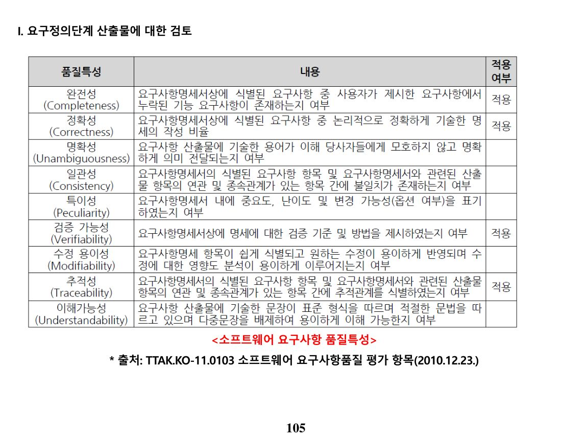
SW 요구사항 품질특성(항목) ★★
본 강좌(및 기출)에서 요구정의단계 점검의 근거로 제시하는 품질특성은 다음과 같다. 소프트웨어 제품 품질특성(기능성·신뢰성 등, ISO/IEC 9126)과 혼동하지 않도록 주의한다.
| 품질특성 | 의미 |
|---|---|
| 완전성(Completeness) | 요구되어야 할 모든 사항이 누락 없이 기술되어 있음 |
| 일관성(Consistency) | 요구사항 상호 간 모순·충돌이 없음 |
| 특이성(Uniqueness) | 각 요구사항이 개별적으로 고유하게 식별·구분됨 |
| 추적성(Traceability) | 요구의 출처 및 이후 산출물까지 추적 가능 |
보기 · 가.완전성 나.일관성 다.특이성 라.추적성 마.기능성 바.신뢰성
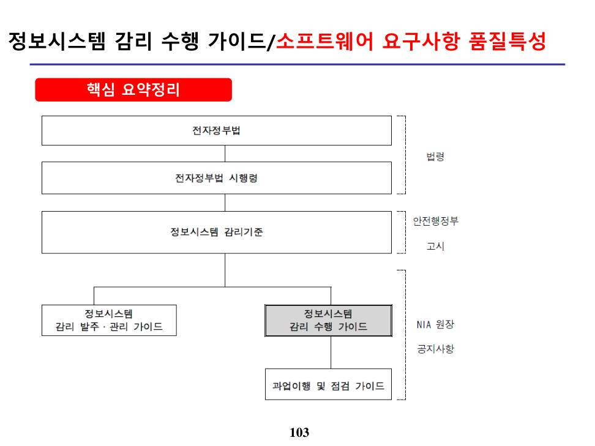
14. 정보시스템 감리 수행 가이드 – 감리수행결과보고서
감리의 3대 핵심 문서 ★★★
감리에서 가장 중요한 산출물은 다음 3개 문서이며, 각각 단계별 감리 절차의 종료 시점에 작성·제출된다.
| 감리 단계 | 종료 후 산출물(문서) |
|---|---|
| ① 예비조사 | 감리계획서 |
| ② 현장감리 | 감리수행결과보고서 |
| ③ 시정조치확인 | 시정조치확인보고서 |
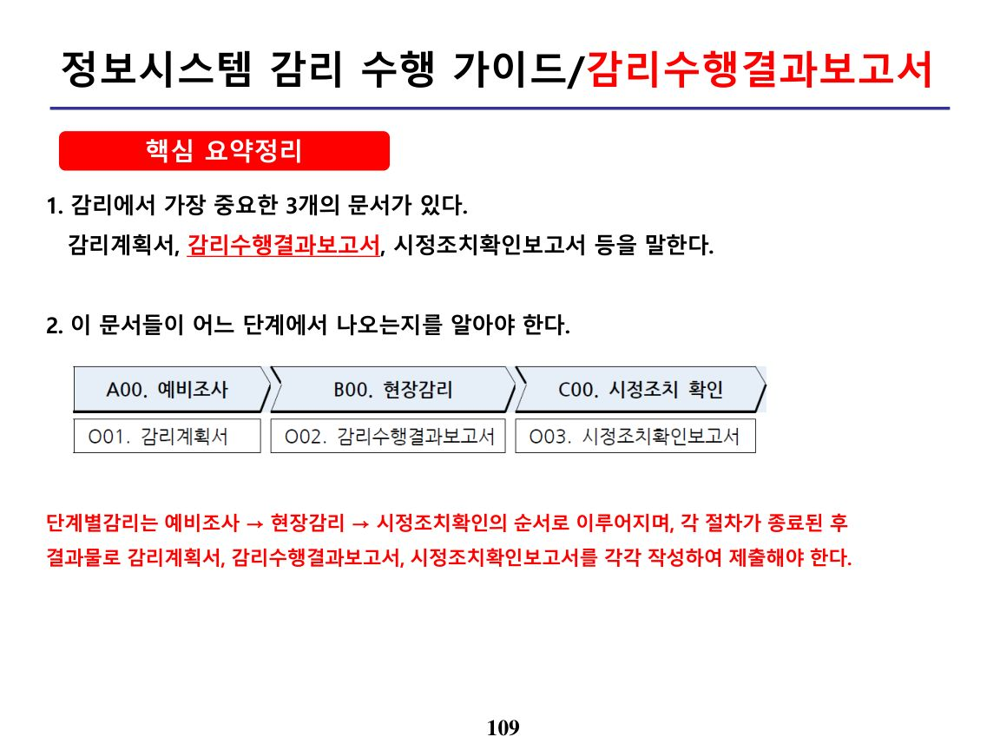
감리수행결과보고서(종료단계) 양식 ★★
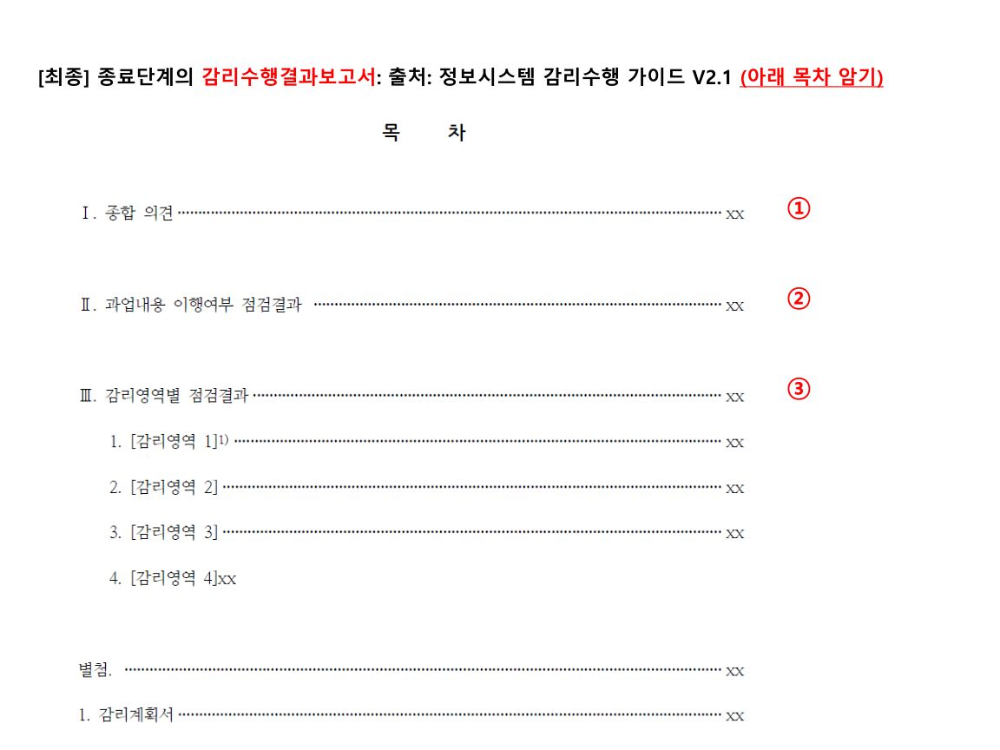
| 구성 항목 | 내용 |
|---|---|
| ① 종합의견 | 감리 총평 및 종합 판단 의견(핵심 이슈·권고) |
| ② 과업내용 이행여부 점검결과 | 계약 과업내용의 이행 여부를 점검한 결과 |
| ③ 감리영역별 점검결과 | 감리영역별 점검항목별 점검결과 및 개선권고 |
| + 시정조치 확인보고 | 지적사항에 대한 시정조치 확인 결과 |
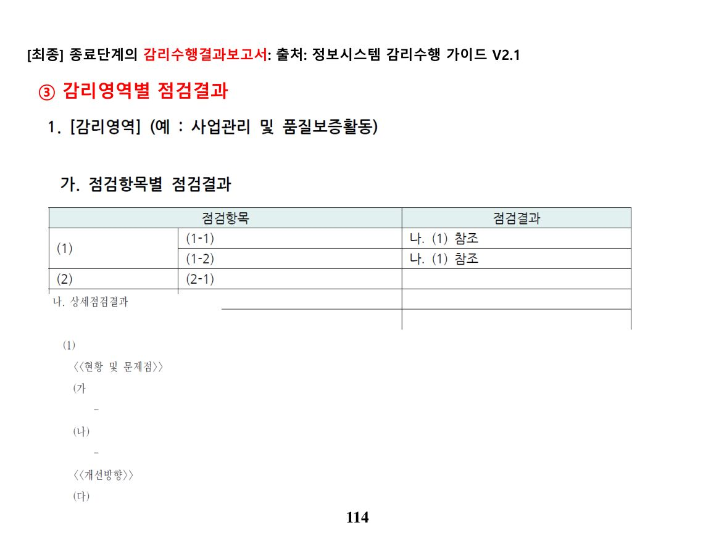
제외(함정 보기): 전제조건 — 감리수행결과보고서 양식 항목이 아니다.
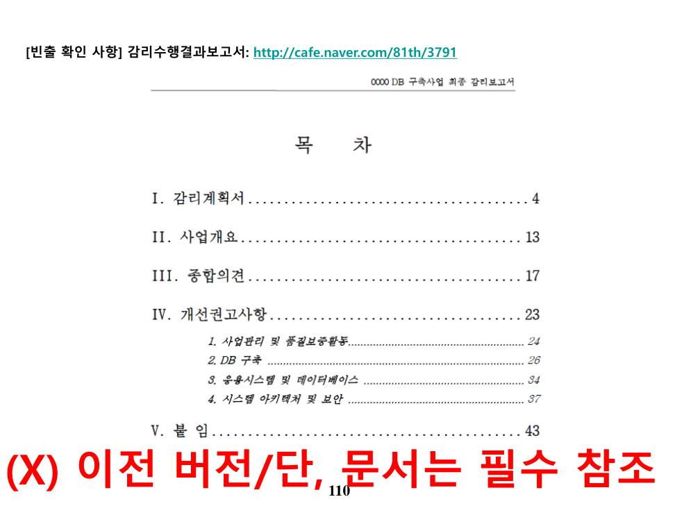
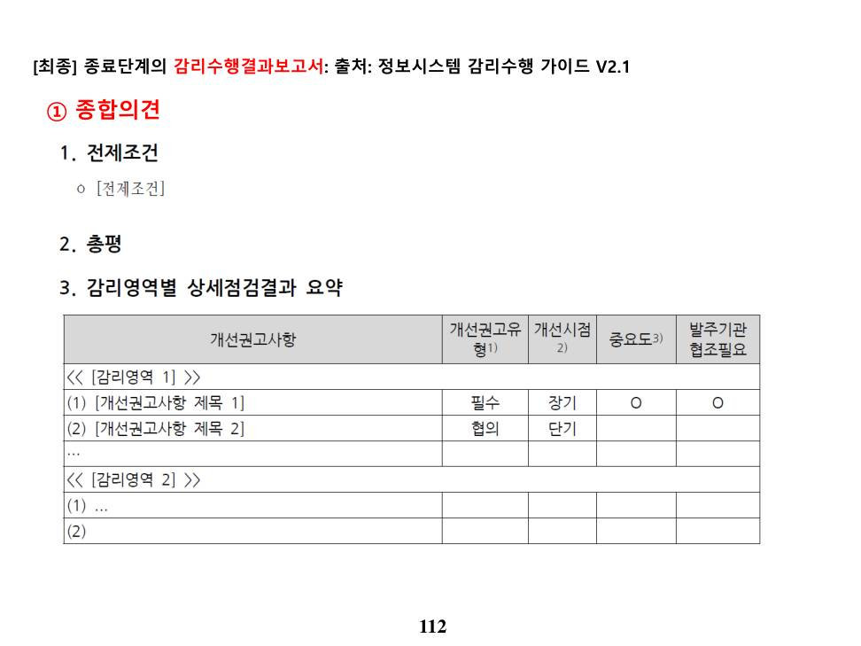
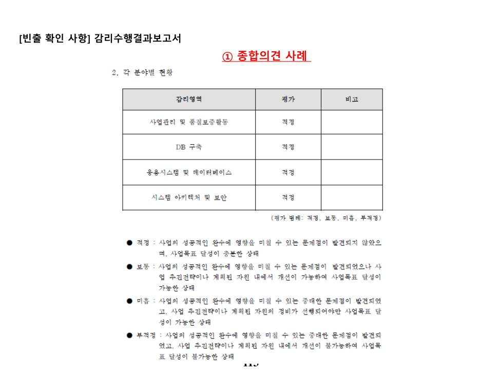
📚 전체 기출·예상문제 (13문항) — 원문 수록
본 강좌 원본 PDF에 수록된 기출·예상문제를 빠짐없이 원문 그대로 정리했습니다. 정답·해설은 강의 원문 기준입니다.